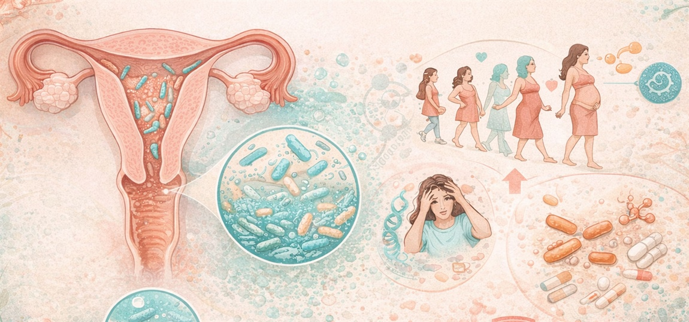
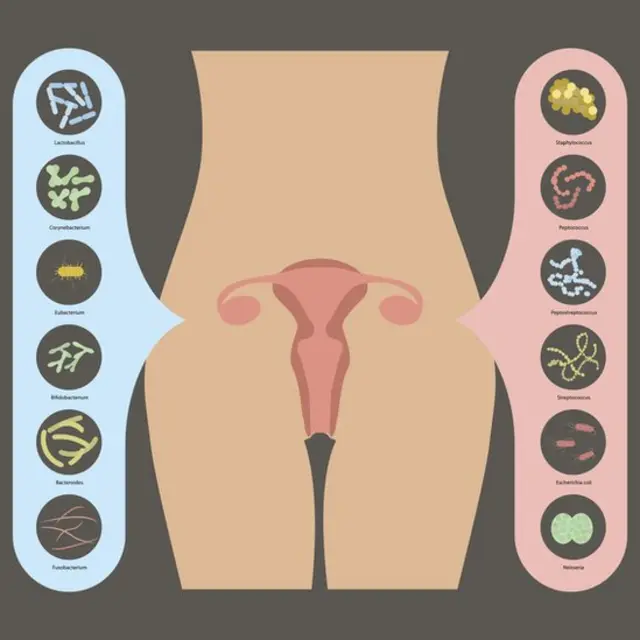
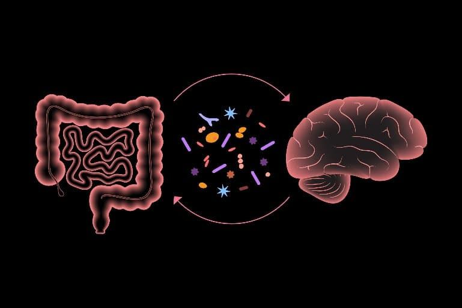
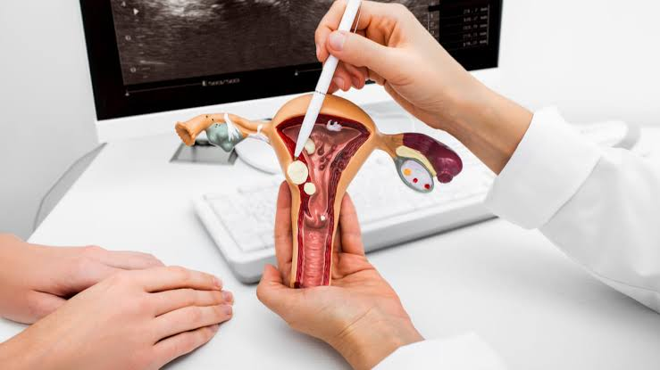
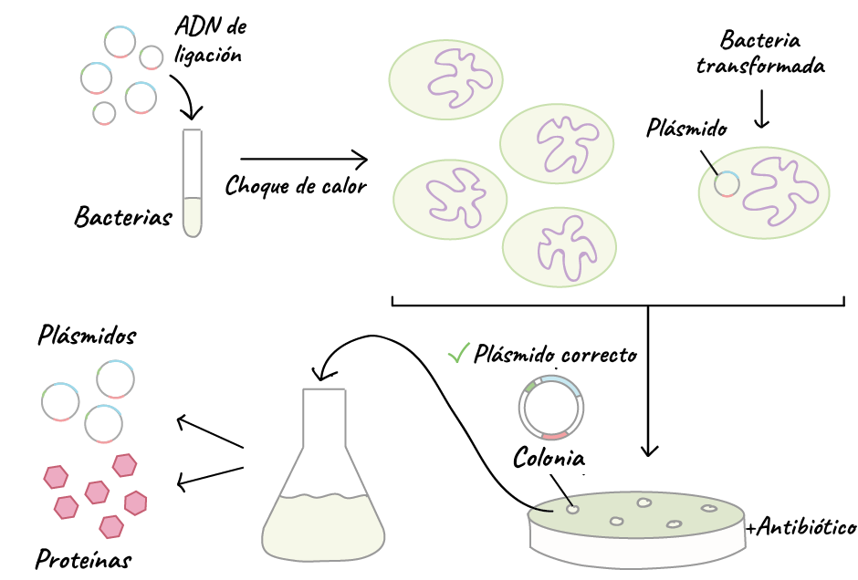

Equipo de Trabajo
Rodrigo Lara
Mariana Salas Villanueva
Stefany Alessandra Castro Balboa
Grupo y Carrera1 A • Ing. Biomédica
Unidad de AprendizajeCálculo Integral y Diferencial I
Catedrático TitularFuentes Castro Juan Ángel
Contacto del Equiporodrigolaradelatorre@gmail.com
Transferencia microbiana vaginal en el parto: dinámica biológica, modelado diferencial y diseño biomédico
Un análisis cuantitativo y traslacional del primer inóculo microbiano humano. Este proyecto integra los mecanismos fisiológicos de colonización vertical entre madre y neonato, su formulación analítica mediante cálculo diferencial e integral de poblaciones, y las aplicaciones de la ingeniería biomédica en biomateriales de transferencia controlada y biosensores point-of-care.
Fisiología y transmisión vertical del microbioma en el nacimiento
El tránsito por el canal vaginal constituye el evento biológico fundador del microbioma del recién nacido, con implicaciones determinantes en la educación de su sistema inmunitario y maduración epitelial.
Durante la gestación, los estrógenos inducen un engrosamiento del epitelio vaginal y acumulación de glucógeno, favoreciendo una microbiota de baja diversidad dominada casi exclusivamente por especies protectoras del género Lactobacillus (principalmente Lactobacillus crispatus, L. jensenii y L. gasseri).
Estas bacterias metabolizan el glucógeno hacia ácido láctico, generando un microambiente ácido protector con pH típicamente entre 3.8 y 4.5. Al nacer por vía vaginal, el neonato entra en contacto directo y traga este fluido biológico, impregnando su piel, cavidad bucal, tracto respiratorio superior y tracto gastrointestinal con miles de millones de unidades formadoras de colonias (UFC).
Esta siembra natural promueve la síntesis temprana de IgA secretora, estimula las uniones estrechas (tight junctions) del endotelio entérico y previene la proliferación de patógenos oportunistas mediante competencia por sustratos y secreción de bacteriocinas.

Figura 1. Dinámica del ecosistema microbiano en el aparato reproductor femenino a lo largo de las etapas vitales y la gestación, mostrando la densidad de lactobacilos protectores.
Parto Vaginal (Eutócico)
Inóculo fundador fisiológico: Exposición a Lactobacillus, Bifidobacterium y Prevotella maternos.
Carga inicial masiva: Elevada densidad microbiana inicial ($N_0 \approx 10^5 \text{ CFU/mL}$) permitiendo alcanzar fase de meseta en menos de 24 horas.
Maduración inmunológica: Estímulo oportuno de células T reguladoras ($T_{\text{reg}}$) y tolerancia inmunológica. Menor riesgo de asma y atopia.
Cesárea (Quirúrgica)
Disrupción del inóculo natural: El feto se extrae directamente del útero estéril sin contacto con la flora vaginal.
Colonización nosocomial: La piel y mucosa del neonato son colonizadas por flora ambiental y hospitalaria (Staphylococcus, Streptococcus, Corynebacterium).
Retraso colonizador crítico: Carga inicial reducida ($N_0 \approx 10^2 \text{ CFU/mL}$) y retardo en la expresión de enzimas metabólicas clave.

Figura 2. Taxonomía comparativa: cepas comensales benéficas (Lactobacillus, Bifidobacterium) frente a patógenos oportunistas potenciales en el canal reproductivo.
Figura 3. Microfotografía de contraste de fase (400x). (A) Morfología fisiológica de bacilos de Lactobacillus en eubiosis; (B) Pérdida de lactobacilos en vaginosis con flora anaerobia facultativa.

Figura 4. El eje microbiota-intestino-cerebro. La adecuada siembra neonatal inicial modula la síntesis de metabolitos antiinflamatorios y vías de señalización neuroinmunológica temprana.
Modelado matemático: cálculo diferencial e integral de la colonización
Cómo las herramientas del cálculo infinitesimal permiten cuantificar la tasa instantánea de proliferación y la exposición bacteriana acumulada recibida por el neonato.
En ingeniería biomédica, los procesos biológicos no se describen cualitativamente, sino a través de modelos dinámicos deterministas. El establecimiento de la biomasa microbiana $N(t)$ en el epitelio neonatal está gobernado por una tasa intrínseca de crecimiento $r$ y una limitación física de espacio y nutrientes representada por la capacidad de carga $K$.
Cálculo Diferencial: Tasa Instantánea de Crecimiento
Ecuación diferencial de Verhulst
$$\frac{dN}{dt} = r \cdot N\left(1 - \frac{N}{K}\right)$$
La primera derivada $\frac{dN}{dt}$ define la velocidad instantánea de colonización bacteriana por unidad de tiempo. El factor $(1 - \frac{N}{K})$ representa el amortiguamiento logístico por agotamiento de nichos receptores en la mucosa neonatal.
N(t) Densidad microbiana en el tiempo (CFU/mL)
r Tasa malthusiana intrínseca de división ($h^{-1}$)
K Capacidad de carga mucosal máxima ($\approx 10^6 \text{ CFU/mL}$)
Segunda Derivada y Punto de Máxima Velocidad
Criterio de concavidad e inflexión
$$\frac{d^2N}{dt^2} = r^2 N \left(1 - \frac{N}{K}\right)\left(1 - \frac{2N}{K}\right)$$
Al igualar la segunda derivada a cero ($\frac{d^2N}{dt^2} = 0$), se deduce matemáticamente que la máxima tasa de crecimiento ocurre con exactitud cuando la población alcanza la mitad de su capacidad de carga:
En el parto vaginal, $N_0$ es alto, por lo que $t^*$ se alcanza en pocas horas; en cesárea, el punto de máxima velocidad se posterga severamente.
Cálculo Integral: Inóculo Acumulado
Área bajo la curva (AUC) e integral definida
$$M_{\text{total}}(T) = \int_{0}^{T} N(t)\, dt$$
La integral definida representa la dosis biológica acumulada recibida por el sistema inmunitario en la ventana de tiempo neonatal crítica $[0, T]$.
Integrando analíticamente la curva logística $N(t) = \frac{K}{1 + A e^{-rt}}$ donde $A = \frac{K - N_0}{N_0}$:
$$\int N(t)dt = K \left[ t + \frac{1}{r}\ln\left(\frac{1 + A e^{-rt}}{1 + A}\right) \right]$$
Laboratorio interactivo de dinámica poblacional microbiana
Manipula las variables diferenciales de la ecuación logística ($N_0$, $r$, $K$) y visualiza en tiempo real las diferencias cinéticas entre las vías de parto y la intervención biomédica.
Simulador Cinético de Colonización Neonatal
Solución analítica y cálculo numérico en tiempo real
Escenarios Clínicos Predefinidos
80,000 CFU
Cantidad de bacterias transferidas en el momento $t = 0$.
0.38 h⁻¹
Velocidad intrínseca malthusiana de duplicación celular.
1.0M CFU
Límite asintótico superior impuesto por la superficie mucosal.
48 h
Horas postnatales simuladas.
Biomasa Final N(T)--
Tasa Derivada dN/dt--
Inóculo Acumulado ∫N dt--
Punto de Inflexión (t*)--
Aplicaciones y diseño en ingeniería biomédica
Cómo el ingeniero biomédico transforma un proceso biológico espontáneo en un procedimiento clínico estandarizado, reproducible y seguro mediante biomateriales y biosensores.
La técnica tradicional de vaginal seeding consiste en impregnar una gasa de algodón estéril en el canal vaginal materno antes de una cesárea programada, para luego aplicarla manualmente sobre la boca, cara y cuerpo del neonato.
No obstante, este método empírico adolece de dos retos críticos abordables desde la ingeniería biomédica:
Riesgo de transferencia de patógenos: Si la madre porta asintomáticamente Streptococcus agalactiae (EGB), herpes simple (VHS), Chlamydia o vaginosis bacteriana, el hisopado tradicional no cribado puede provocar sepsis neonatal fulminante o neumonía.
Variabilidad incontrolada en la masa transferida: Las gasas de algodón estándar sufren desecación rápida, provocando lisis masiva de bacterias anaerobias y una tasa de absorción errática en la epidermis neonatal.

Figura 5. Topografía del canal del parto y mucosa cervical: interfase biomecánica donde ocurre la impregnación fisiológica durante el tránsito eutócico.

Figura 6. Ingeniería de cepas microbianas y bioprocesos: selección en cultivo y formulación de consorcios probióticos sintéticos o Live Biotherapeutic Products (LBPs).
Biomateriales Inteligentes
Hidrogeles de liberación y transporte controlado
Diseño de apósitos poliméricos biocompatibles basados en matrices de alginato-quitosano o hidrogeles de colágeno hidratado. Permiten mantener la viabilidad de cepas de Lactobacillus en condiciones anaeróbicas controladas y dosificar la tasa de transferencia tegumentaria siguiendo la Ley de Difusión de Fick.
Sistemas Microfluídicos
Biosensores Point-of-Care (PoC) para screening rápido
Desarrollo de dispositivos microfluídicos lab-on-a-chip con amplificación isotérmica (LAMP) o detección electroquímica para tamizar en menos de 20 minutos la presencia de Streptococcus agalactiae y virus patógenos en el fluido materno antes de autorizar la transferencia.
Biotecnología Farmacéutica
Consorcios bacterianos definidos (LBPs)
En lugar de usar secreciones vaginales crudas sin estandarizar, la ingeniería biológica avanza hacia la formulación de consorcios definidos liofilizados con proporciones estequiométricas calculadas de L. crispatus y B. infantis purificados bajo normas de Buenas Prácticas de Fabricación (GMP).
Simulación de Transferencia por Contacto en Apósito Biomédico
Cinética de transferencia de masa y decaimiento exponencial: $J(t) = J_0 e^{-k_d t}$
Al frotar suavemente el apósito impregnado sobre la epidermis neonatal durante un intervalo $[0, t]$, el flujo bacteriano transferido $J(t)$ decrece con el tiempo por agotamiento de la interfase:
*Nota para diseño biomédico: Un contacto de 4 a 6 minutos logra transferir más del 70% de la carga bacteriana viable sin comprometer la temperatura del neonato.
Evidencia científica y artículos de referencia
Resumen analítico de los estudios internacionales pioneros utilizados para estructurar esta investigación biomédica.
eLife Sciences • 2021 • DOI: 10.7554/eLife.57051
Modeling transfer of vaginal microbiota from mother to infant in early life
Investigación en 665 binomios madre-hijo de la cohorte prospectiva COPSAC2010. Los autores formularon modelos computacionales basados en Ratios Ponderadas de Transferencia (Weighted Transfer Ratios - WTR) comparando muestras vaginales en el 3er trimestre con la microbiota fecal y respiratoria neonatal a la semana 1, mes 1 y año 1. Demostraron empíricamente cómo el modo de parto altera las trayectorias de persistencia bacteriana.
Possible Therapeutic Mechanisms and Future Perspectives of Vaginal Microbiota Transplantation
Revisión exhaustiva sobre el trasplante de microbiota vaginal (VMT) y la siembra en cesáreas. Aborda los mecanismos de protección celular por bacteriocinas, restitución de eubiosis, entrenamiento del eje inmunometabólico, y detalla los requerimientos indispensables de bioseguridad y cribado patogénico requeridos para la práctica clínica estandarizada.